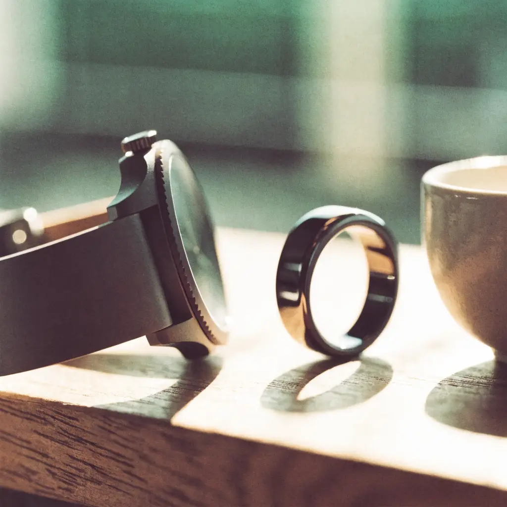

Con receta y seguimiento médicoTratamiento GLP-1, llevado por un médico.
Entrenas, comes bien y lo mides todo, pero hay cosas que el entreno solo no mueve. Los análogos del GLP-1 son tratamiento médico para el peso y la composición corporal: con receta privada, con seguimiento y solo si estás dentro de la indicación. Un médico valora tu caso gratis y te responde, normalmente, en menos de 24 horas.
Cuestionario de unos minutos, gratis y sin compromiso. Un médico revisa tu caso sin coste y te dice si el tratamiento tiene sentido para ti. Solo pagas si decides empezar un plan.
La decisión de prescribir es siempre del médico, únicamente si el tratamiento está clínicamente indicado en tu caso y con el seguimiento oportuno.
En serio, con médicos y sin atajos
- Médicos en España, independientes
- Receta privada solo si el médico la indica
- Respuesta normalmente en menos de 24 h
- El medicamento, en la farmacia que tú prefieras
- Datos protegidos conforme al RGPD
Hay cosas que el entreno solo no mueve.
Duermes con un anillo, entrenas con un reloj y sabes tus macros de memoria. Aun así, el apetito y el metabolismo van por libre: los regula una biología que no elegiste, y contra eso la fuerza de voluntad tiene un límite. Para eso existe el tratamiento médico. La diferencia entre hacerlo bien y hacerlo a lo loco no es el fármaco: es quién lo lleva. Aquí lo lleva un médico, con receta, con seguimiento y con tus datos delante.
Empieza gratisEl tratamiento, hablando claro.
Sin rodeos: esto es lo que hacen nuestros médicos y lo que puedes esperar si tu caso está dentro de la indicación.
Qué es
Los análogos del GLP-1 son medicamentos de prescripción que actúan sobre el apetito y el metabolismo. Se usan, bajo indicación y control médico, para el tratamiento del peso y la mejora de la composición corporal, siempre como complemento a la alimentación y a la actividad física que ya haces.
Qué hacen nuestros médicos
Llevan tu tratamiento de principio a fin: valoran tu caso con tus datos (entreno, hábitos, historial), deciden si estás dentro de la indicación, emiten la receta privada si procede, ajustan la pauta a tu ritmo y te acompañan con seguimiento continuo por el portal, en privado y por escrito.
Qué pasa si no estás dentro de la indicación
Te lo decimos igual de claro. Estos medicamentos tienen criterios clínicos concretos y la decisión es siempre del médico: si tu caso no los cumple, te explicará por qué y no habrás pagado nada. Aquí nadie sale con una receta que no le toca.
Clynia es una plataforma que te conecta con médicos independientes: no vende ni dispensa medicamentos ni promociona ninguna marca concreta. Si tu médico emite una receta privada, el medicamento lo compras tú en la farmacia que prefieras y su coste no está incluido en la cuota del plan.
Tres pasos y cero salas de espera.
Sin cita y sin desplazarte: empiezas con un cuestionario gratuito y un médico te responde por email cuando ha valorado tu caso, nunca un algoritmo.
-
1
Cuéntanos tu caso
Un cuestionario online gratuito de unos minutos: entreno, hábitos, historial, objetivo. El cuestionario solo descarta por seguridad; todo lo demás lo valora un médico real.
-
2
Un médico decide contigo
Estudia tu caso y te responde por email, normalmente en menos de 24 horas: si el tratamiento está indicado para ti, te lo propone; si no, te explica por qué y qué alternativas ve.
-
3
Tratamiento con seguimiento
Si decides empezar, tu médico emite la receta privada, ajusta la pauta a tu ritmo y te acompaña por el portal. Verás el precio del plan antes de decidir nada.
Esto no es para todo el mundo.
Es para ti si...
- Entrenas y te cuidas, pero el peso o la composición corporal llevan tiempo sin responder como esperas.
- Quieres saber de boca de un médico si este tratamiento está indicado en tu caso, con un sí o un no claros.
- Si lo empiezas, quieres llevarlo bien: con receta, con pauta ajustada y con alguien al otro lado.
- Prefieres pagar por hacerlo con cabeza antes que jugártela con lo que llega por un grupo de WhatsApp.
No es para ti si...
- Buscas la receta sí o sí, la diga quien la diga. Aquí la única opinión que cuenta es la del médico.
- Estás embarazada o dando el pecho: el cuestionario te descartará por seguridad.
- Quieres comprar el medicamento sin médico detrás. De eso ya hay demasiado por ahí, y no somos eso.
- Esperas un milagro sin tocar la alimentación ni moverte. El tratamiento acompaña; no sustituye.
Resolvemos tus dudas.
¿Qué es un análogo del GLP-1?
Un medicamento de prescripción que imita una hormona propia del cuerpo implicada en el apetito y el metabolismo. Se usa bajo indicación y control médico para el tratamiento del peso y la composición corporal. No es un suplemento ni se compra sin receta: por eso aquí siempre hay un médico delante y detrás.
¿Me lo van a recetar seguro?
No. Y desconfía de quien te lo garantice. Estos medicamentos tienen criterios clínicos de indicación y la decisión es siempre del médico que valora tu caso. Si estás dentro, te lo propone con su pauta; si no, te explica por qué y no pagas nada.
Soy deportista y no tengo mucho sobrepeso. ¿Tiene sentido para mí?
Depende de tu caso, y esa es exactamente la pregunta que responde el médico en la consulta gratuita. La indicación de estos tratamientos no va de etiquetas sino de criterios clínicos: cuéntale tu situación y tu objetivo, y te dirá con claridad si tiene sentido o no. Sin humo en ninguna de las dos direcciones.
¿Cuánto cuesta?
Empezar es gratis: el cuestionario y la primera consulta médica no tienen coste. Solo pagas si el médico te propone el tratamiento y tú eliges un plan; verás el precio antes de decidir nada. El medicamento va aparte y lo compras en tu farmacia, como cualquier otro medicamento con receta.
¿Es legal y serio hacer esto online?
Sí. La telemedicina es un acto médico reconocido en España y los médicos a los que te conectamos están colegiados y actúan con criterio propio. Cambia el canal, no el rigor: valoración individual, receta solo si procede y seguimiento de verdad.
¿Qué pasa con mis datos?
Tus datos de salud se tratan conforme al RGPD, cifrados y visibles únicamente para el médico que te atiende. Sirven para una sola cosa: que valore tu caso y lleve tu tratamiento. Nunca los compartimos con terceros con fines comerciales.
¿En qué se diferencia esto de conseguirlo por mi cuenta?
En todo lo que importa: valoración real de tu caso antes de empezar, receta legal de un médico que responde con su colegiación, pauta ajustada a ti y alguien a quien escribir cuando surgen dudas o molestias. El mercado gris te da un bolígrafo; esto es un tratamiento.
Si te lo estás pensando, que te lo diga un médico.
Cuestionario gratuito, sin compromiso y sin tarjeta. En menos de un día, normalmente, sabrás si este tratamiento es para ti.
Empieza gratis